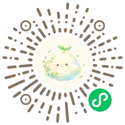
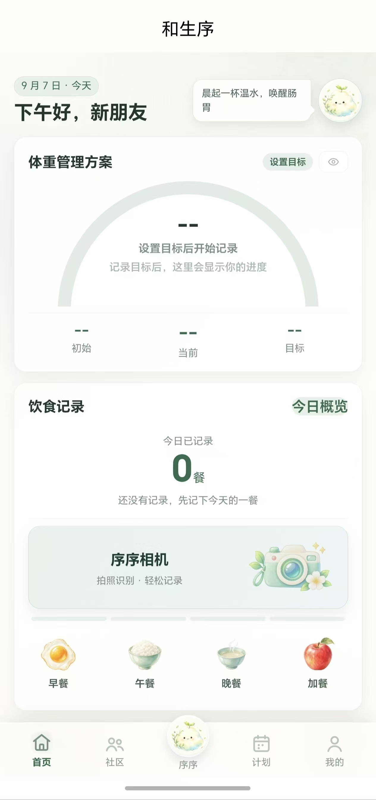
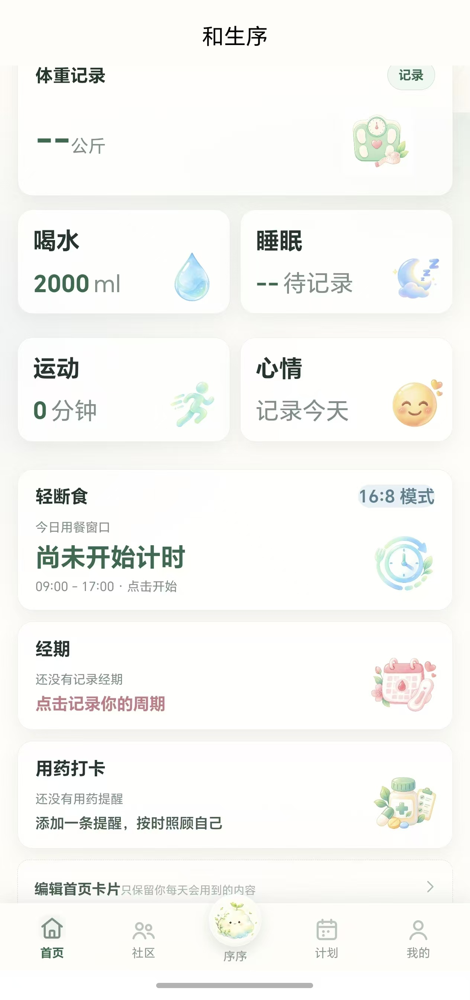
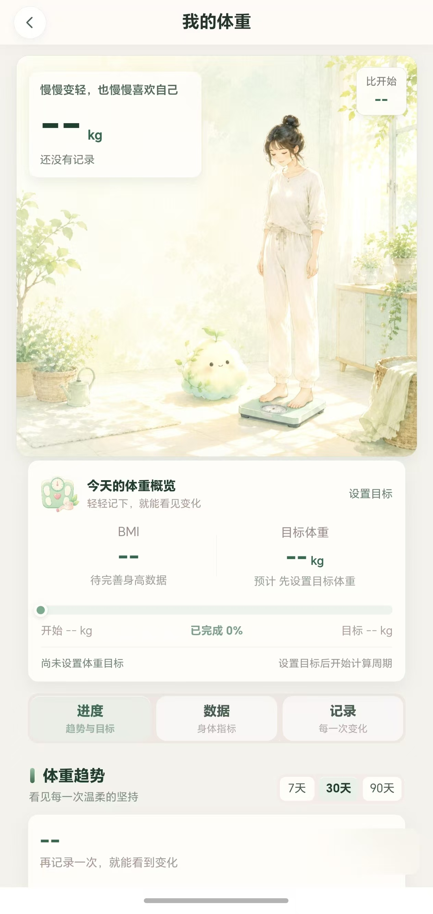
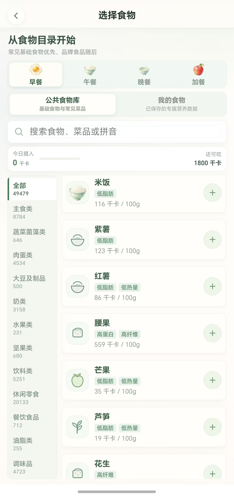
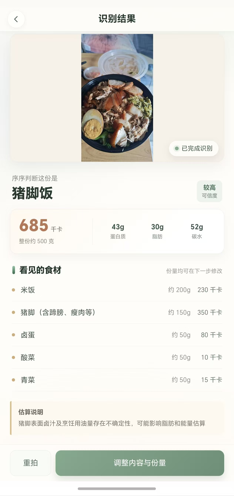
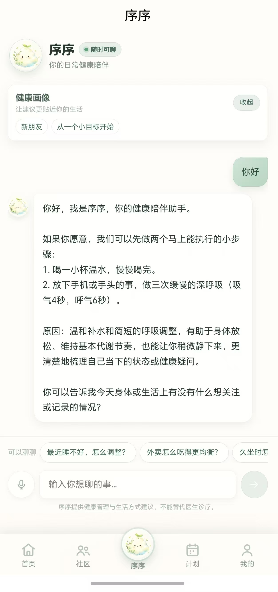

微信小程序
微信内扫码进入，通过 wx.login 获取临时 code，由服务端绑定微信身份。照片读取使用微信文件系统。

uni-app 编译为 mp-weixin，经微信开发者工具上传；静态素材通过 CloudBase CDN 分发。
AI HEALTH / 微信小程序 × ANDROID APP
AI 健康管理双端产品。用一套 Vue 3 + uni-app + TypeScript 客户端承载微信小程序与 App，通过 NestJS API、Prisma 与 PostgreSQL 组织健康记录、食物数据和模型服务。
页面、领域规则和 API client 复用；登录与图片读取按平台处理。
微信内扫码进入，通过 wx.login 获取临时 code，由服务端绑定微信身份。照片读取使用微信文件系统。

uni-app 编译为 mp-weixin，经微信开发者工具上传；静态素材通过 CloudBase CDN 分发。
使用邮箱 / 账号与密码注册登录，通过原生文件 API 读取相机或相册图片。共用客户端业务与服务端 API。
由 HBuilderX 云打包，当前提供 Android 测试安装包。应用商店和 iOS 发布仍需完成相应签名、证书与审核。
健康首页、记录矩阵、体重、食物目录、识别和 AI 对话。截图来自项目仓库的运行记录，点击查看完整原图。

目标、记录与序序相机入口。
点击查看完整原图 ↗
体重、饮水、睡眠、运动、心情与照顾提醒。
点击查看完整原图 ↗
目标差距、趋势和历史记录。
点击查看完整原图 ↗
49,479 条公共目录与个人食物库。
点击查看完整原图 ↗
菜品、可见食材与营养估算，用户校正后确认。
点击查看完整原图 ↗
模型回复、对话体验与失败状态。
点击查看完整原图 ↗平台差异留在客户端适配，数据和模型能力由服务端承载。
uni-app / Vue 3 / Pinia；平台条件编译处理登录与图片读取。
NestJS、认证上下文、DTO 校验、用户所有权约束。
Prisma / PostgreSQL；GLM 视觉识别与文本模型代理。
Docker / Azure Container Apps；CloudBase CDN。
序序相机的食材与营养结果是估算，支持用户修改并确认。客户端不内置模型密钥。双端共用 API 不代表所有本地记录已跨设备同步；部分本地优先记录仍保留同步边界。